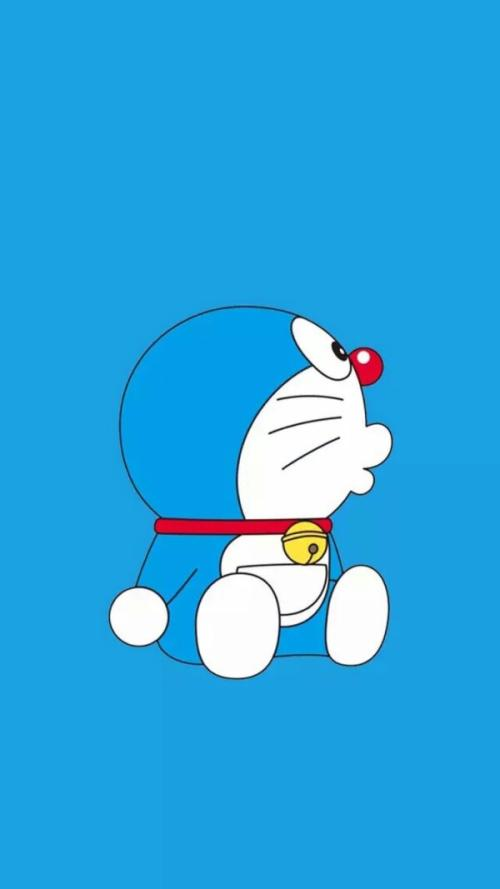
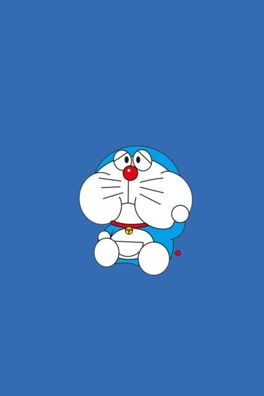
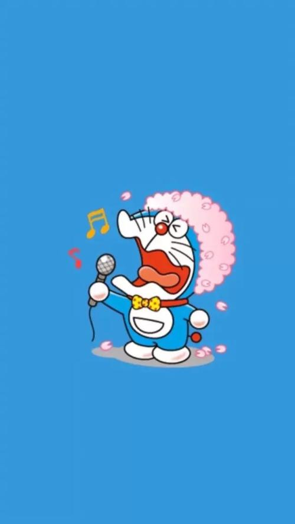
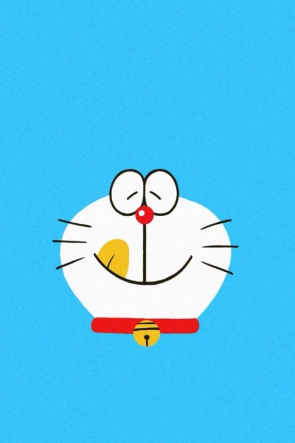

- 自拍
- 拉拉
- 我最美
- 我最萌
- 介绍北大资源研修学院位于北京市中关村北区核心地带，占地面积近200亩，拥有30多间标准化多媒体教室、2-6人间学生...
-
介绍北大资源研修学院位于北京市中关村北区核心地带，占地面积近200亩，拥有30多间标准化多媒体教室、2-6人间学生...
-
介绍北大资源研修学院位于北京市中关村北区核心地带，占地面积近200亩，拥有30多间标准化多媒体教室、2-6人间学生...
-
介绍北大资源研修学院位于北京市中关村北区核心地带，占地面积近200亩，拥有30多间标准化多媒体教室、2-6人间学生...